%%{init: {'theme': 'base', 'themeVariables': { 'git0': '#ff7043', 'git1': '#42a5f5', 'git2': '#66bb6a', 'git3': '#ab47bc' }}}%%
gitGraph
commit id: "Base landscape"
commit id: "Add house"
commit id: "Add red tree"
branch opposite-house
checkout opposite-house
commit id: "House opposite river"
checkout main
commit id: "House behind tree"
merge opposite-house id: "Merge opposite-house"
branch tower-and-ship
checkout tower-and-ship
commit id: "Antenna tower"
commit id: "Ship on ocean TS"
checkout main
commit id: "Add pond"
cherry-pick id: "Ship on ocean TS"
commit id: "Construction site"
branch car-park-road
checkout car-park-road
commit id: "Car park + road"
checkout main
commit id: "Bridge"
commit id: "Office building"
branch merge-accept-incoming
checkout merge-accept-incoming
merge car-park-road id: "Accept incoming"
checkout main
branch merge-reject-incoming
checkout merge-reject-incoming
merge car-park-road id: "Reject incoming"
checkout main
branch merge-manual-resolve
checkout merge-manual-resolve
merge car-park-road id: "Manual merge"
checkout main
merge merge-manual-resolve id: "Merge manual resolve"
Git: Checkpoints for Your Code
The Development Nightmare
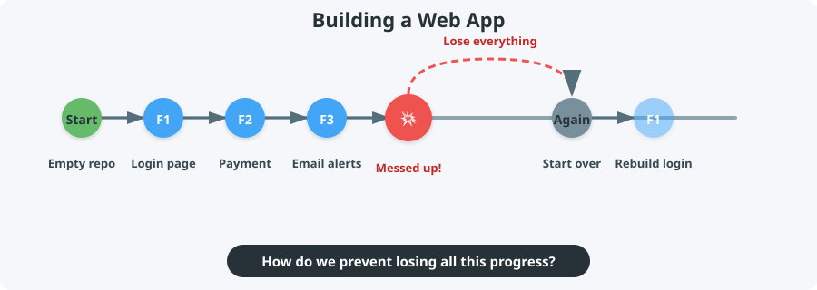
A Familiar Gaming Scenario
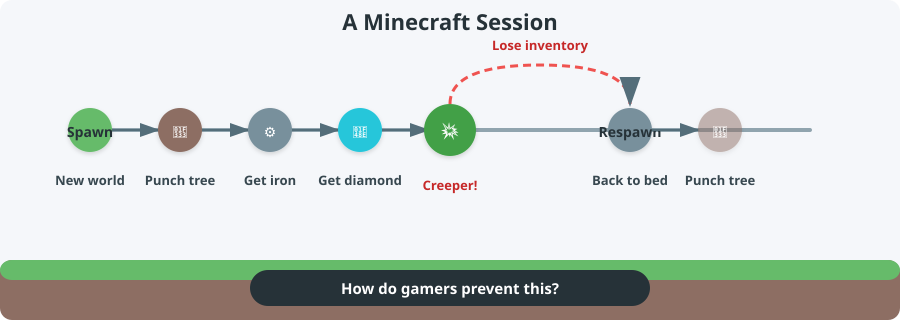
Answer: Use Checkpoints!
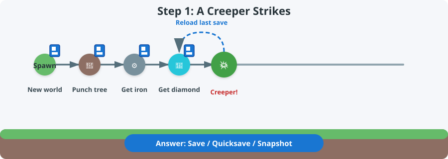
Step 1: A creeper strikes, reload last save
Reload the Checkpoint
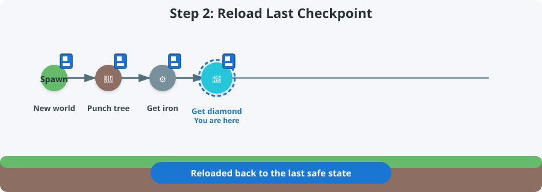
Step 2: Back at the diamond checkpoint
Continue from the Checkpoint
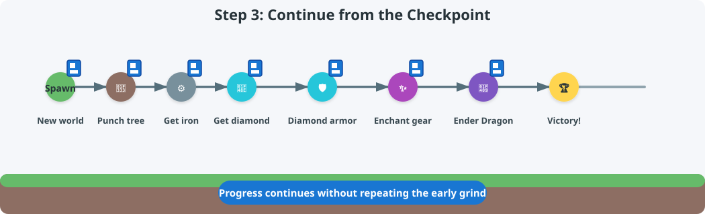
Step 3: Progress continues after reloading
Key idea: A checkpoint lets you return to a safe state and keep playing without redoing everything.
Git = Checkpoints for Code
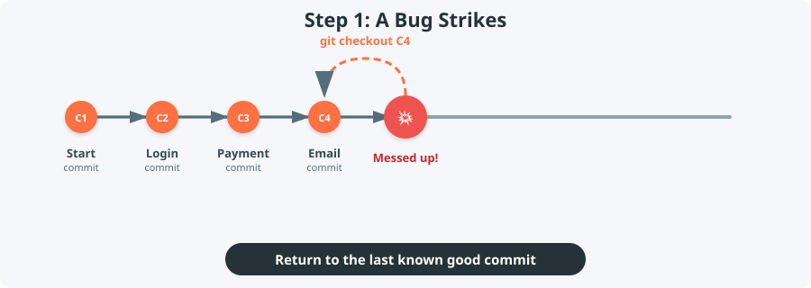
Step 1: A bug strikes, checkout the last good commit
Each Git commit is a snapshot of your project.
Checkout the Last Good Commit
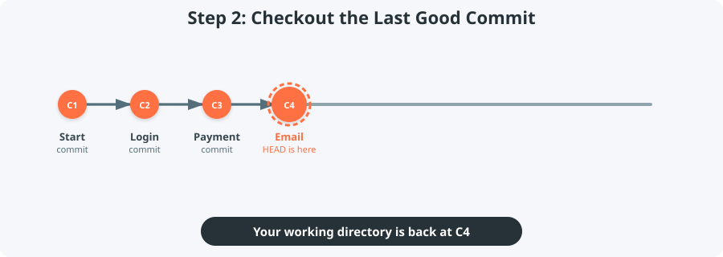
Step 2: HEAD is back at the last good commit
Continue Development
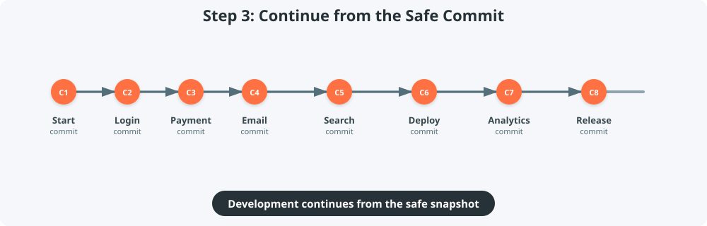
Step 3: New commits are added after the safe commit
Key idea: Git commits are snapshots you can return to, compare, and build upon.
Our Demo: A Landscape Scene
We will use this landscape scene to explain Git. Each commit adds or changes something in the scene.

Base landscape
Our Demo Repository
We will explore a small repo that builds this landscape scene.
Commits in Action
A Design Dilemma
Current state

8d1987f — House behind red tree
What if…
- I want to try the house on the other side of the river?
- I move it, then decide it looked better behind the tree?
- How can I experiment without losing the current version?
What is a Git Branch?
%%{init: {'theme': 'base', 'themeVariables': { 'git0': '#ff7043', 'git1': '#42a5f5' }}}%%
gitGraph
commit id: "Base landscape"
commit id: "Add house"
commit id: "Add red tree"
branch opposite-house
checkout opposite-house
commit id: "House opposite river"
checkout main
commit id: "House behind tree"
A branch is a separate timeline that starts from a specific commit. You can experiment freely while the original line stays untouched.
Branch in Action
Branches in Real Projects
gitGraph
commit id: "Initial setup"
commit id: "User login"
branch feature/payment
checkout feature/payment
commit id: "Payment form"
commit id: "Stripe integration"
checkout main
commit id: "Dashboard"
branch bugfix/login-error
checkout bugfix/login-error
commit id: "Fix auth bug"
checkout main
In real development, you might branch to build a feature, fix a bug, or try a refactor — all at the same time.
What if we want both houses?

Now we have two versions of the house. Should we:
- Rebuild on
mainand lose the behind-tree version? - Rebuild on
opposite-houseand lose the original? - Merge them so both houses appear together?
Merging: Combine Timelines
%%{init: {'theme': 'base', 'themeVariables': { 'git0': '#ff7043', 'git1': '#42a5f5' }}}%%
gitGraph
commit id: "Base landscape"
commit id: "Add house"
commit id: "Add red tree"
branch opposite-house
checkout opposite-house
commit id: "House opposite river"
checkout main
commit id: "House behind tree"
merge opposite-house id: "Merge opposite-house" type: HIGHLIGHT
A merge brings two branches back together.
Merge in Action
Merging in Real Projects
gitGraph
commit id: "Initial setup"
commit id: "User login"
branch feature/payment
checkout feature/payment
commit id: "Payment form"
commit id: "Stripe integration"
checkout main
commit id: "Dashboard"
merge feature/payment id: "Merge payment"
In real development, you merge a feature branch back into main when it is ready.
Result of the Merge
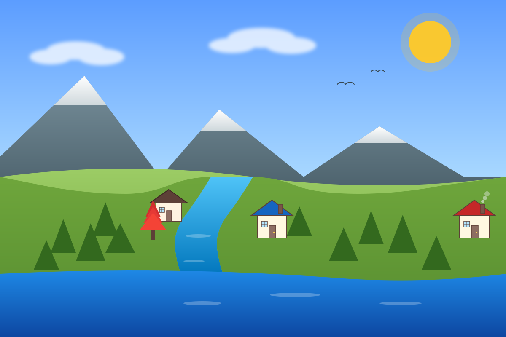
Merged landscape with both houses
46130e9 — Merge branch ‘opposite-house’
What if we want just one change?
tower-and-ship branch
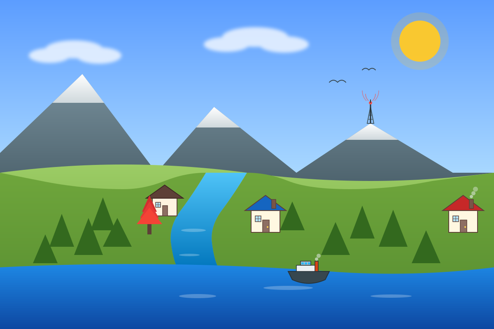
b5580ac — Add ship on ocean
Current main
46130e9— Merge branch ‘opposite-house’d1cd048— Add pond
What if we want the ship-on-ocean change on main, but not the whole tower-and-ship branch?
Cherry-Pick: Copy One Commit
%%{init: {'theme': 'base', 'themeVariables': { 'git0': '#ff7043', 'git1': '#66bb6a' }}}%%
gitGraph
commit id: "Merge opposite-house"
branch tower-and-ship
checkout tower-and-ship
commit id: "Antenna tower"
commit id: "Ship on ocean"
checkout main
commit id: "Add pond"
cherry-pick id: "Ship on ocean"
Cherry-pick copies a single commit from one branch to another — without merging the whole branch.
Use cherry-pick when you want just one bug-fix or feature, not an entire branch.
Cherry-Pick in Action
Cherry-Picking in Real Projects
gitGraph
commit id: "v1.0 release"
branch feature-search
checkout feature-search
commit id: "Search UI"
commit id: "Fix search crash"
checkout main
cherry-pick id: "Fix search crash"
In real development, you might cherry-pick a single bug-fix commit from a feature branch to a release branch.
Result of the Cherry-Pick

Main after cherry-picking ship on ocean
280e899 — Add ship on ocean
How Do We Merge This?
main
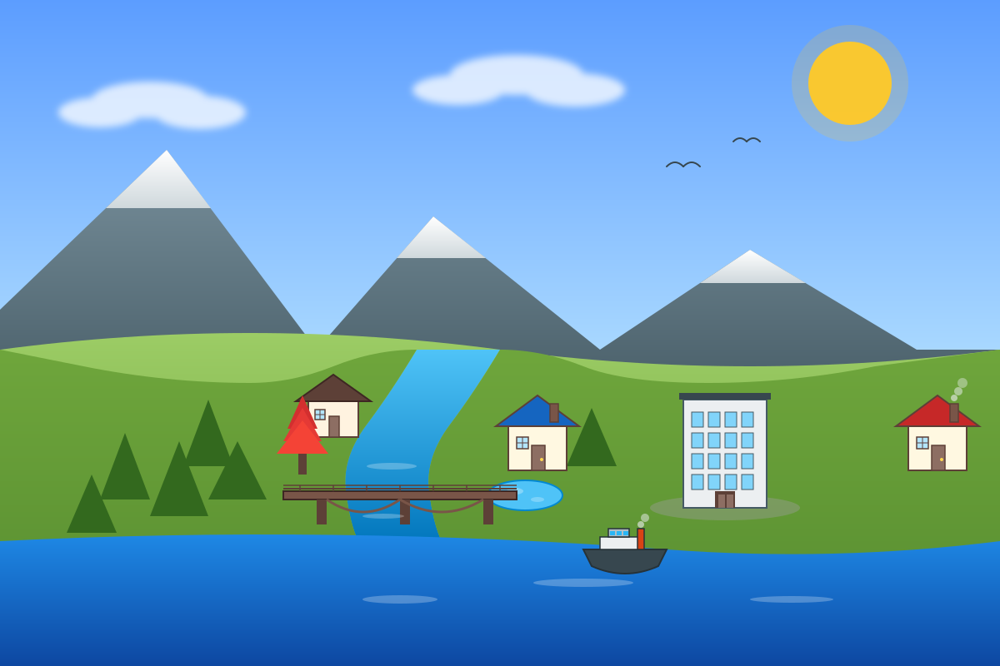
6c20659 — Multi-story office building
car-park-road
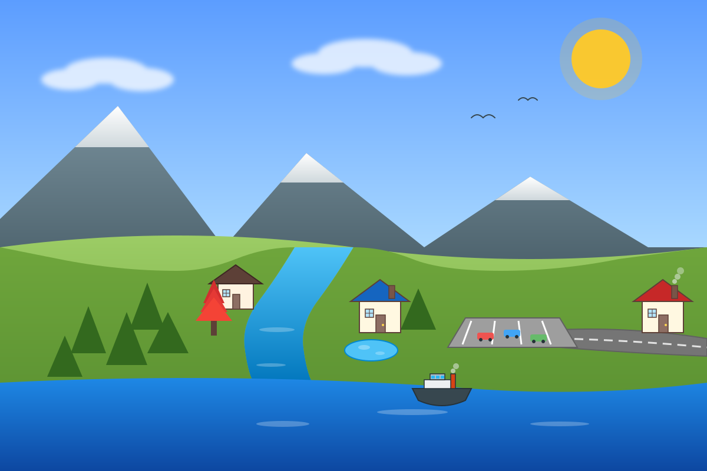
fa941eb — Car park and road
What is a Merge Conflict?
A merge conflict happens when Git cannot automatically combine two branches because they edited the same part of a file.
In real development, this often happens when:
- Two developers edit the same function
- One person renames a file while another changes its contents
- A feature branch and
mainboth update the same configuration file
When a conflict occurs, Git gives you three ways to resolve it:
- Reject all incoming — keep the
mainversion - Accept all incoming — keep the incoming branch version
- Manual merge — combine both versions yourself
Policy 1: Reject All Incoming
Keep the main version and discard the incoming changes.
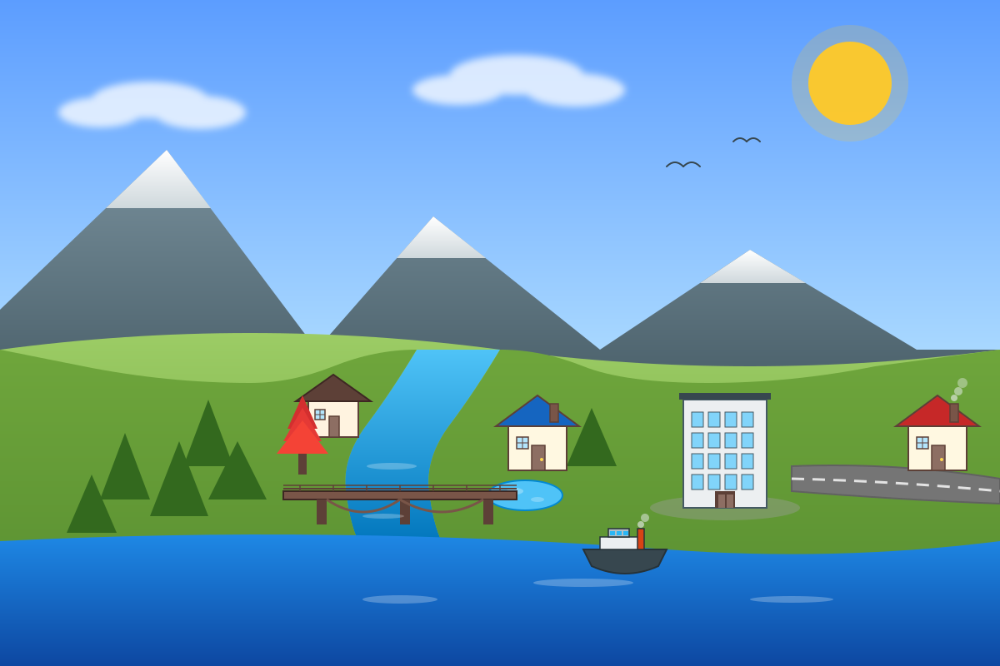
Office building stays
734406d — Merge branch ‘car-park-road’ into merge-reject-incoming
Policy 2: Accept All Incoming
Keep the incoming branch version and discard the main changes.
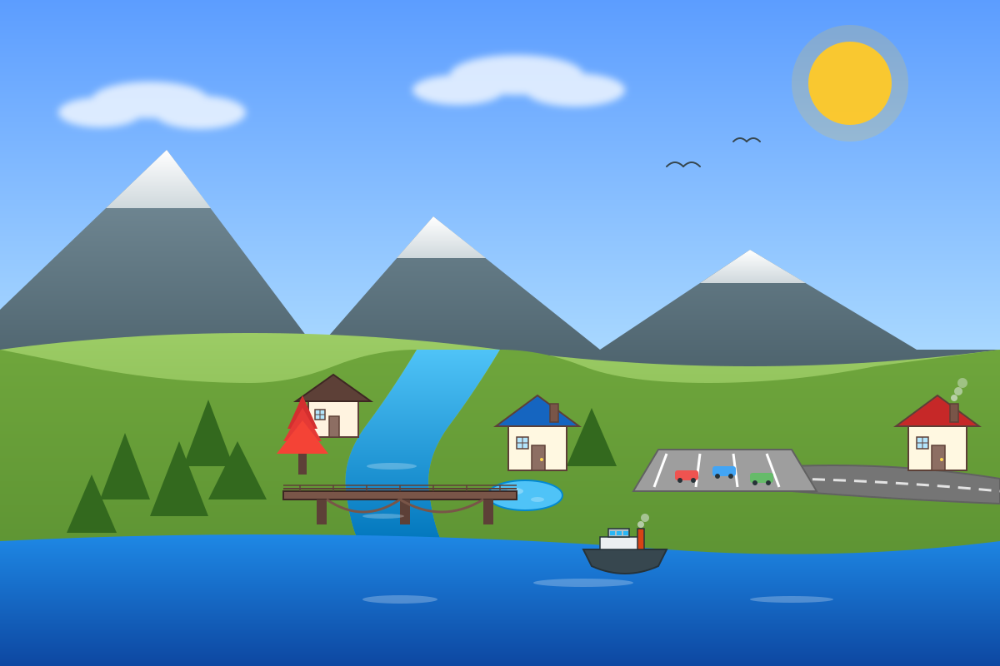
Car park stays
25eba09 — Merge branch ‘car-park-road’ into merge-accept-incoming
Policy 3: Manual Merge
Combine both versions yourself to get the best of both worlds.

Best of both worlds
dfbc161 — Manually resolve merge: office building with surrounding car park
3 Branch Handling Methods
gitGraph
commit id: "Base"
branch feature
checkout feature
commit id: "Feature"
checkout main
commit id: "Main"
merge feature id: "Merge"
Direct merge
Merge the feature branch straight into main and resolve conflicts on main.
gitGraph
commit id: "Base"
branch feature
checkout feature
commit id: "Feature"
checkout main
commit id: "Main"
checkout feature
merge main id: "Merge main"
checkout main
merge feature id: "Merge feature"
Merge main into feature first
Keep the feature branch up to date, resolve conflicts there, then merge back into main.
gitGraph
commit id: "Base"
branch feature
checkout feature
commit id: "Feature"
checkout main
commit id: "Main"
branch sandbox
checkout sandbox
merge feature id: "Sandbox merge"
checkout main
merge sandbox id: "Merge sandbox"
Sandbox branch
Create a temporary branch for the merge, resolve conflicts in the sandbox, then merge it into main.
Recap
| Concept | What it does | Analogy |
|---|---|---|
| Commit | Save a snapshot of your code | Quicksave |
| Checkout | Return to a previous snapshot | Load game |
| Branch | Work on a parallel timeline | Parallel save slot |
| Merge | Combine two timelines | Combine save files |
| Cherry-pick | Copy one snapshot elsewhere | Copy one save point |
| Merge policy | Choose which version to keep | Decide which build to keep |
| Branch handling method | Choose where to perform the merge | Pick a safe place to combine |